PLAYSTATION 1 (PS1)
La primera consola de Sony bajo el nombre PlayStation fue lanzada en 1994, y se considera tanto por volumen de ventas como por popularidad como una de las más exitosas de la historia, y sin duda la más exitosa de la quinta generación. De este modelo se llegaron a vender un total de 102,49 millones de unidades en todo el mundo, y gran parte de su éxito se atribuye a que fue una de las primeras en incorporar CD-ROM para los juegos.

La PlayStation 1 tenía un procesador CoreWare CW33300 de 33,86 MHz con GPU de 32 bits propia de Sony y 2 MB de memoria RAM en formato EDO. Más tarde, en el año 2000, Sony lanzó la PS One, una versión revisada de esta misma consola con hardware actualizado (procesador LSI R3000 de 33,86 MHz, gráfica GTE de 600 nm), que mantenía los 2 MB de RAM, pero introducía 8 MB de almacenamiento interno. Además, la PS One tenía salida FireWire.
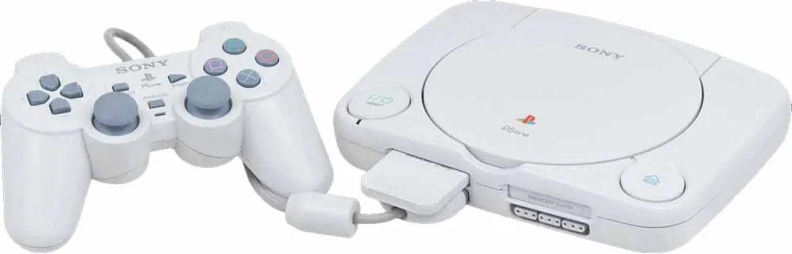PLAYSTATION 2 (PS2)
La PS2 fue sin duda el mayor éxito de ventas en la historia de Sony, con más de 158 millones de unidades vendidas en todo el mundo y que actualmente ostenta el récord de la consola que más rápido llegó a vender 100 millones de unidades. Esta consola representó un enorme salto cualitativo para los jugadores, en parte gracias a un hardware mucho más potente: llevaba un procesador R5900 de 294,912 MHz, una GPU GS de 250 nm, 8 MB de almacenamiento y 32 MB de RAM. Además, la unidad óptica ya no era CD-ROM sino DVD.
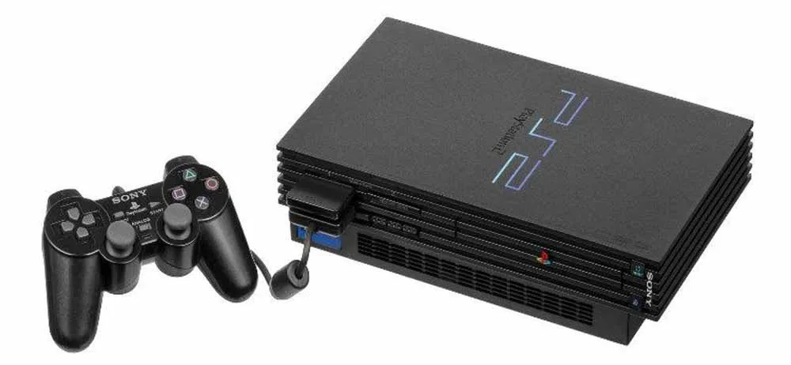
Cuatro años después del exitoso lanzamiento inicial, Sony decidió lanzar una nueva versión bastante más pequeña y ligera, la PS2 Slim, que además incorporaba un sistema de refrigeración mejorado que permitía que la consola hiciera bastante menos ruido. El hardware era el mismo.
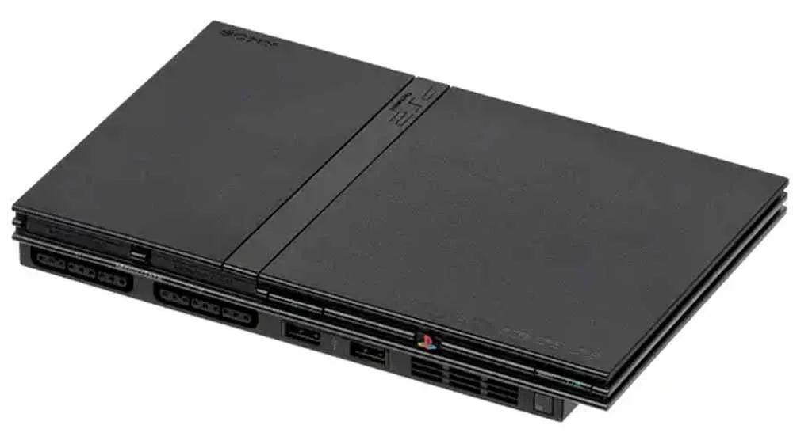
Playstation Portable (PSP)
La famosa PSP fue la primera consola portátil que Sony vendió en todo el mundo, y sí que vendió bastante porque alcanzó los 80.79 millones de unidades vendidas. Esta consola, considerada ya de séptima generación, equipaba un procesador R4000 de 333 MHz, con una GPU personalizada, 32 MB de RAM y una unidad óptica UMD. La resolución de la pantalla era de 480 x 272 píxeles y 24 bit de color.
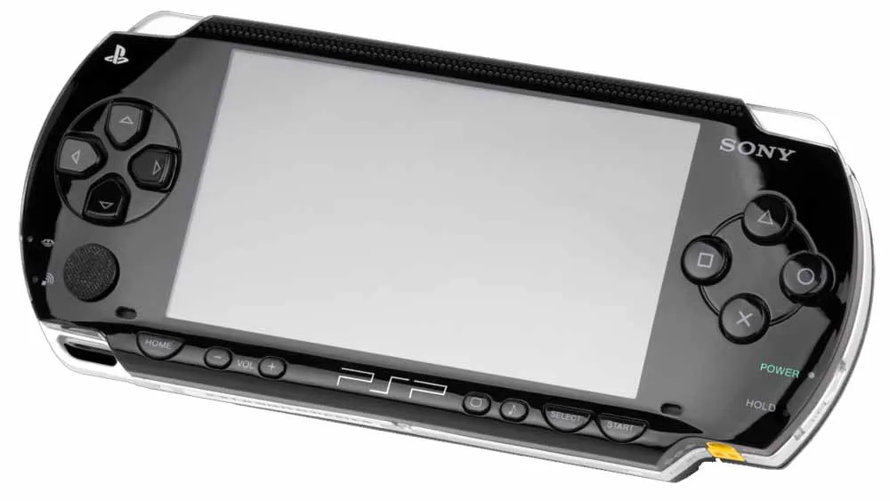
PLAYSTATION 3 (PS3)
PlayStation 3 (2006), Slim (2009) y Super Slim (2012)
Otra consola super ventas más (es que, realmente todas lo han sido), que de nuevo supuso un enorme salto de prestaciones gracias a su hardware actualizado. En este caso, incorporaba un procesador Cell a nada menos que 3,2 GHz, acompañado de una GPU RSX de 65 nm, 20 GB de memoria, 256 MB de RAM y el lector de discos se actualizó a Blu-Ray, además de que por primera vez la salida de vídeo era HDMI.
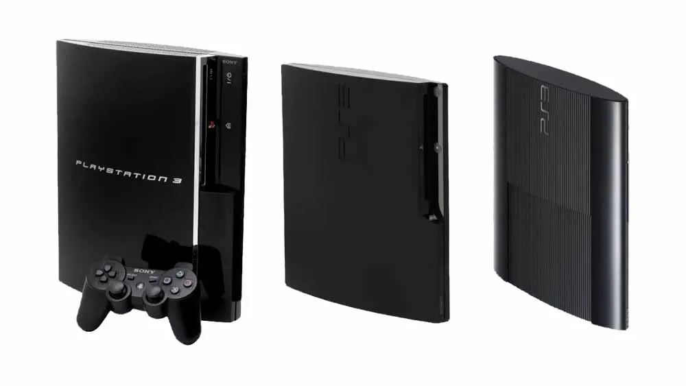
PLAYSTATION 4 (PS4)
PlayStation 4 (2013), Slim (2016) y Pro (2016)
A pesar de que el primer modelo de esta consola se lanzó en 2013, incluso hoy en día se siguen vendiendo, y no hablemos de sus juegos. En la actualidad, ya se han vendido más de 102,8 millones de consolas entre todos sus modelos, y la cuenta sigue subiendo.
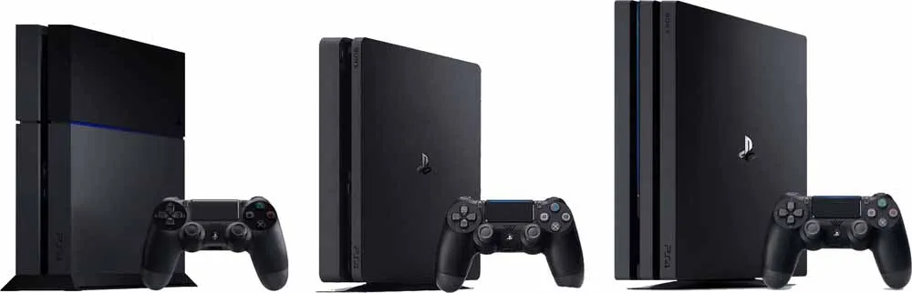
El primer modelo está equipado con un procesador AMD Jaguar de 8 núcleos a 1.6 GHz, con GPU AMD 7870 de 1,84 TFLOPS, 8 GB GDDR6 de RAM y 500 GB de disco duro. Por supuesto, utiliza lector Blu-Ray y tiene salida de vídeo HDMI. Por su parte, el modelo slim es algo más compacto y eficiente, con un consumo menor y menos generación de calor, pero el hardware es el mismo con la salvedad de que ya se ofrecía un modelo con disco duro de 1 TB de capacidad. En cuanto al modelo Pro, es bastante más grande porque tiene una fuente de alimentación mayor y mejor sistema de refrigeración. La APU Jaguar ya funciona a 2.1 GHz y la GPU entrega 4.2 TFLOPS de potencia, más del doble que el modelo original. Además, tiene 1 GB de memoria adicional DDR3 para el sistema, y es compatible con vídeos de resolución 4K. Se ofrece de serie con un disco duro de 1 TB, pero al contrario que las otras dos es mucho más fácil cambiarlo porque solo hay que retirar un tornillo en la parte trasera para sacarlo, motivo por el que muchos usuarios optaron por comprar una PS4 Pro por el simple hecho de que era más fácil ponerle un SSD de 2.5″.
PLAYSTATION 5 (PS5)
Anunciada en 2019 y lanzada al mercado el 19 de noviembre de 2020, la PlayStation 5 ha sido posiblemente la consola más polémica de Sony por el simple hecho de que se lanzó al mercado en un periodo de escasez, en el que era casi imposible el poder optar a comprar una consola y esto provocó una enorme especulación en el mercado de segunda mano, en el que muchos usuarios afortunados que lograban comprar una unidad luego trataban de venderla por el doble para sacar beneficio.
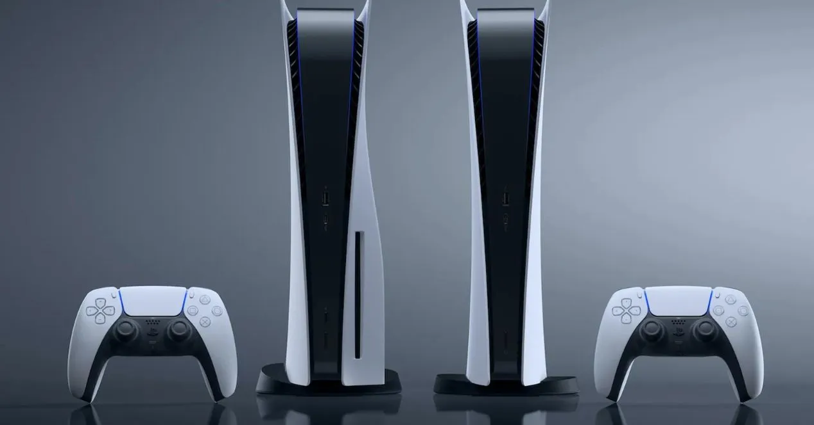
La PS5 se presenta en dos modelos distintos, uno con lector y otro sin él, con 100€ de diferencia en su precio, pero cuyo hardware interno es el mismo: una APU AMD Zen 2 de 8 núcleos a 3.5 GHz con una GPU AMD RDNA 2 capaz de generar 10.3 TFLOPS, 16 GB de memoria GDDR6 compartida, un SSD de 825 GB (y espacio para instalar otro SSD M.2), lector Blu-Ray y por supuesto salida HDMI 2.0 compatible con 4K. El precio de lanzamiento de la versión con disco óptico fue de 499 euros para poco después subirlo a 549 euros y de 399 euros para la versión digital que también subió otros 50 euros unos meses después para situarse en 449 euros. En 2023, Sony lanzó la esperada renovación de la Ps5 con el modelo Slim. Esta nueva versión, como era de esperar, supuso un cambio en el diseño, dimensiones y peso de la PS5 original, versión que también llegó en versiones digital y con unidad de discos ópticos. Además, la versión mínima de almacenamiento pasaba de 825 GB a 1 TB. El resto de las características y especificaciones son las mismas, pero ocupando menos espacio. Respecto a los mandos, estos no recibieron ninguna nueva función. Si hablamos del precio, este también se conservó, siendo e 549 euros la versión disco y de 449 euros la versión en formato digital.
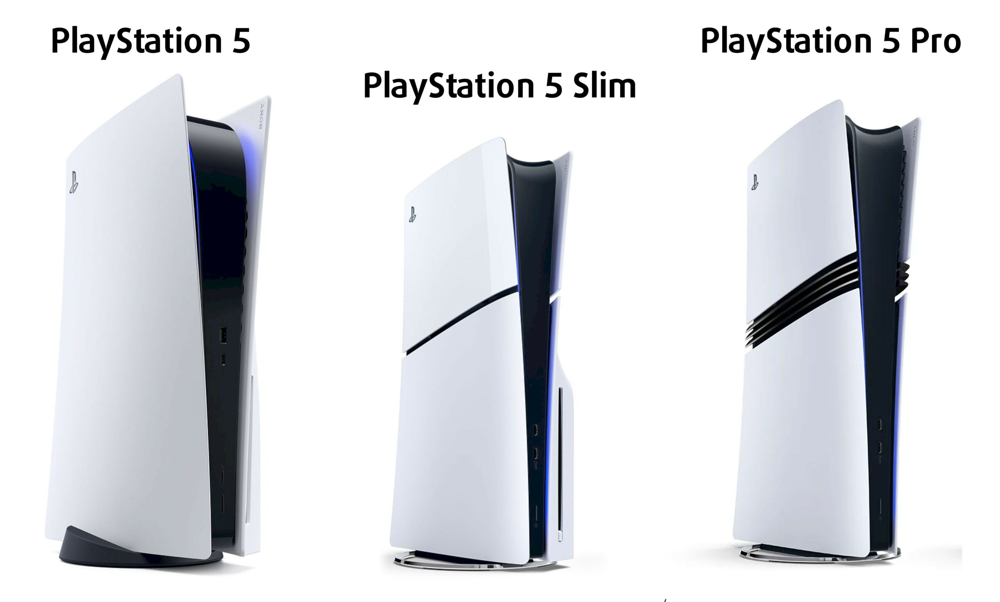
Principales Sagas de Videojuegos de SONY
 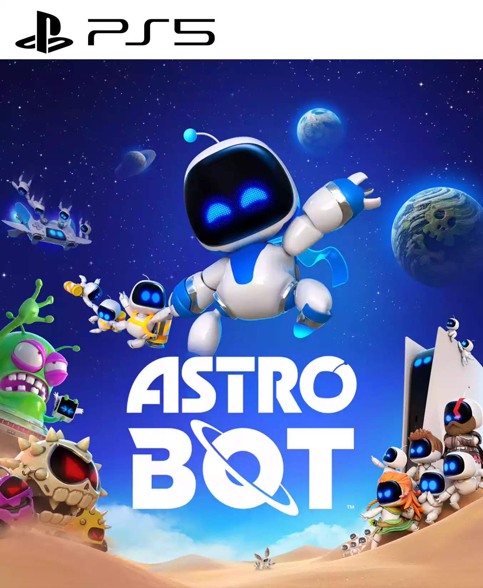
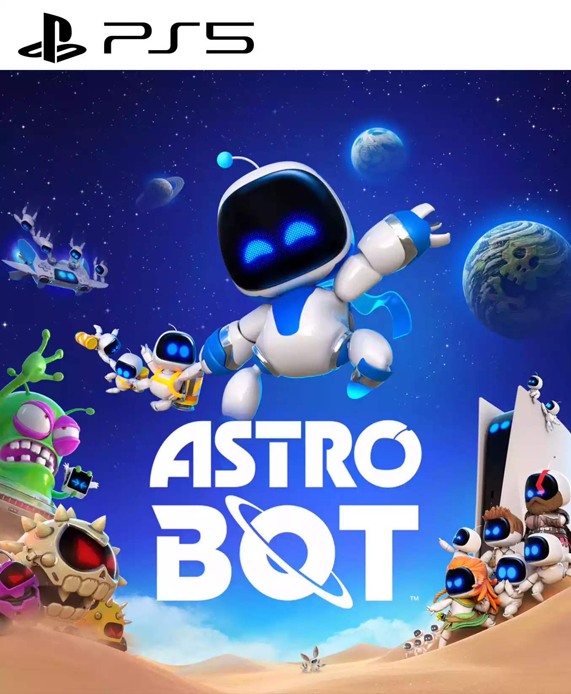
 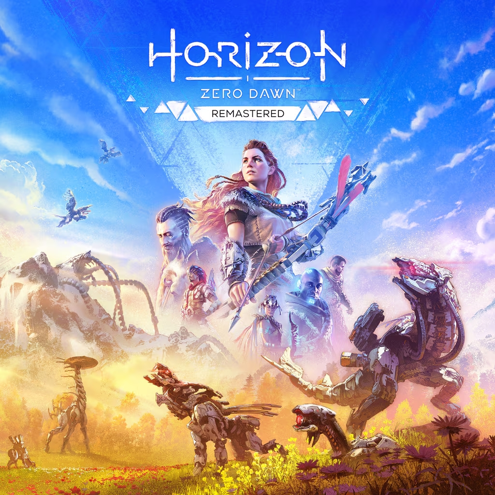
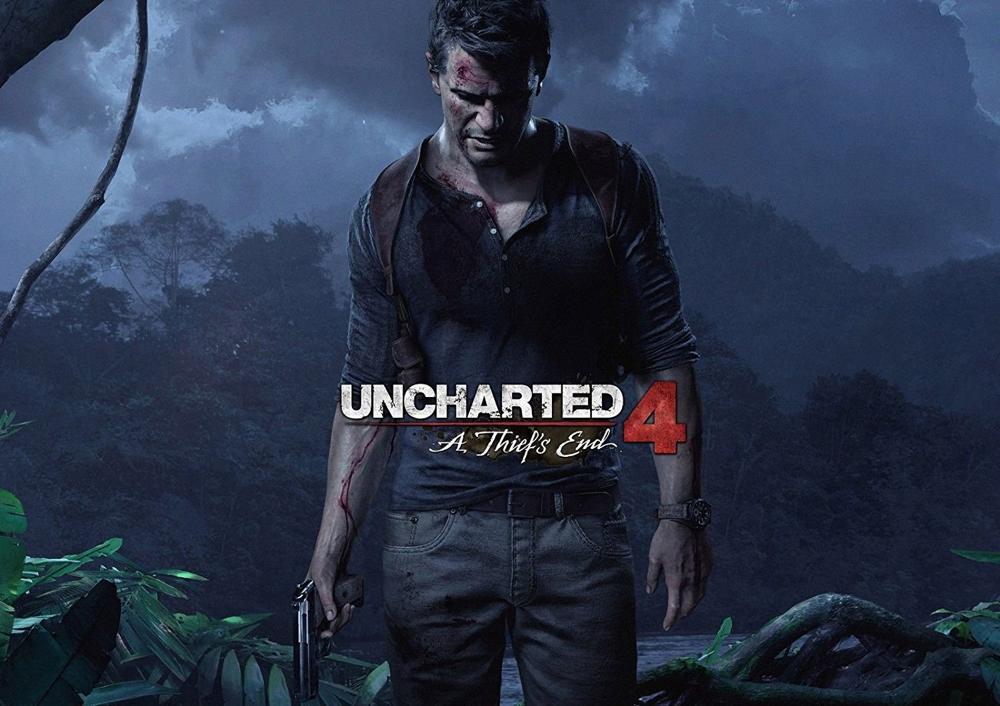
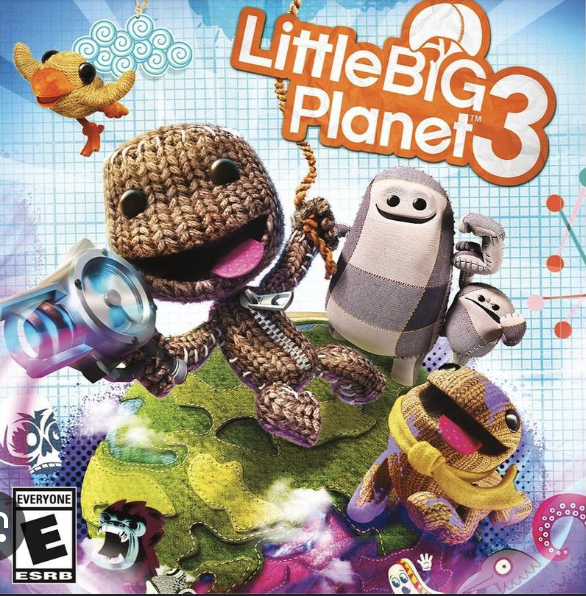
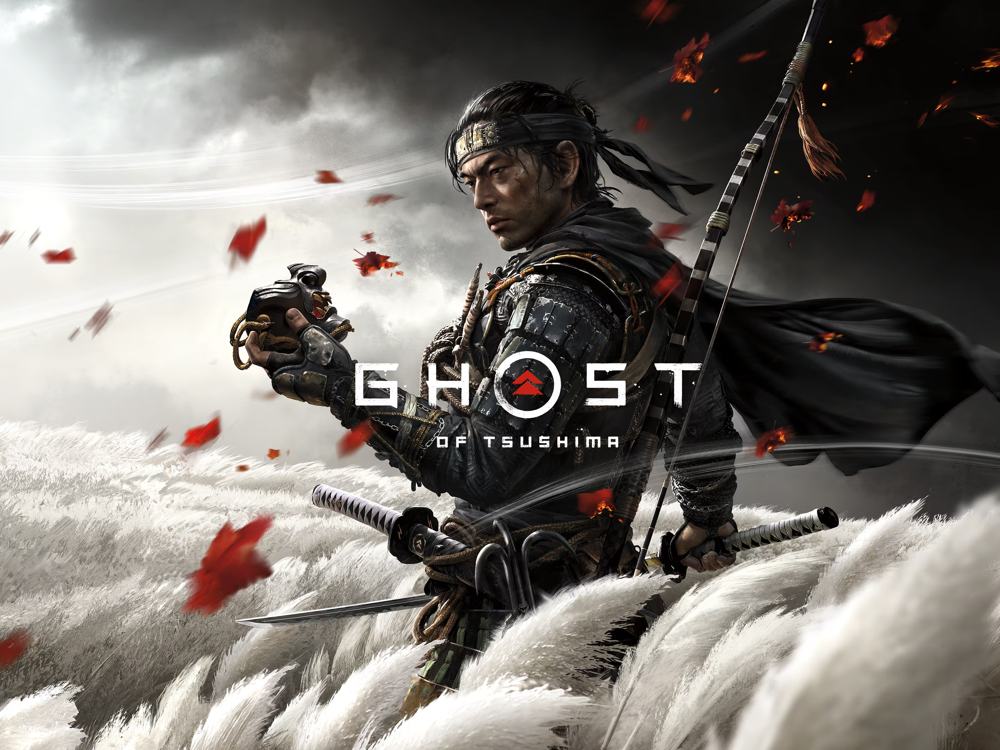
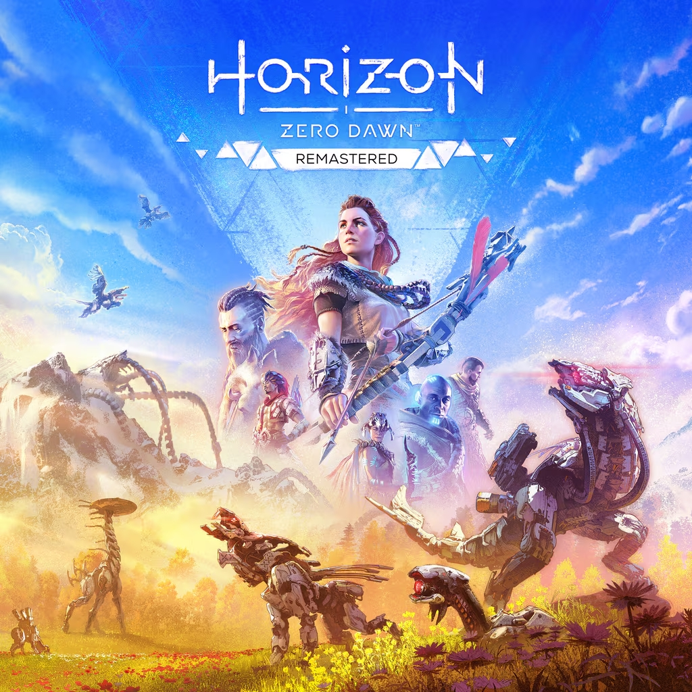
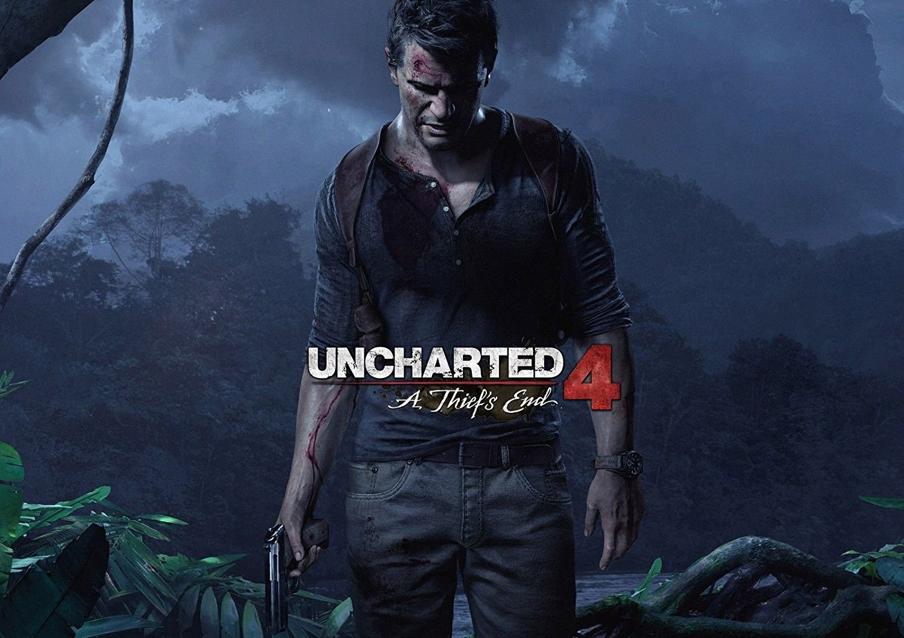
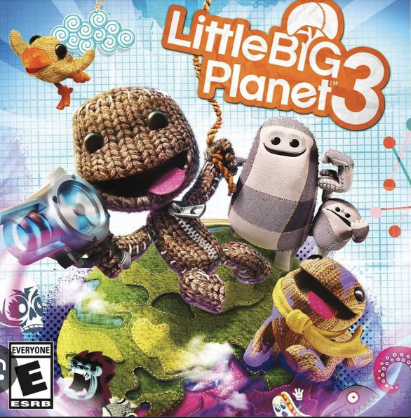
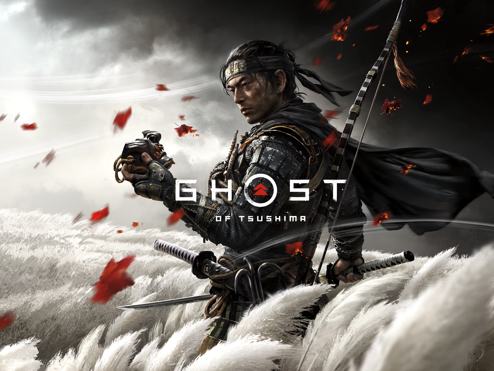